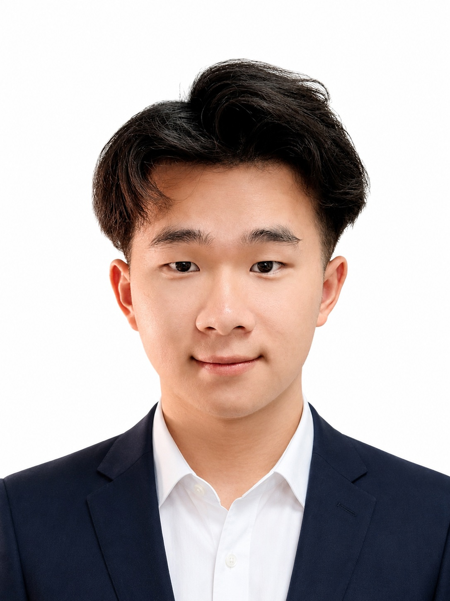

PMSG 频域建模
围绕变工况下的阻抗/导纳特性建模，服务新能源设备快速建模与并网稳定性分析。
Comprehensive Resume
长沙理工大学电气与信息工程学院本科生，专业方向为新能源设备建模与电力系统稳定性分析。研究与实践兴趣集中在 PMSG 频域建模、阻抗/导纳预测、等效电路降阶与 AI+电力系统。

以新能源并网稳定性为主线，将应用统计学的大一数理训练与电气工程专业背景结合起来，形成“频域响应生成 - 等效电路参数降阶 - 机器学习预测 - 稳定性分析”的研究路径。
围绕变工况下的阻抗/导纳特性建模，服务新能源设备快速建模与并网稳定性分析。
通过等效电路参数降阶，将高维频域特性映射为更具解释性的电路参数。
探索机器学习、深度学习与 PSCAD/Simulink 仿真模型的交叉建模工作流。
已形成第一作者 SCI 三区期刊论文和 IEEE 会议论文，另有发明专利实质审查、软件著作权授权与受理成果。
Admittance Prediction for PMSG via Dimensionality-Reduced Equivalent Circuits and Support Vector Machines，中科院三区，第一作者。
Impedance Prediction of PMSG in Circuit Form Under Variable Operating Points，IEEE 会议论文，第一作者。
发明专利实质审查；软件著作权已授权 2 项、已受理 5 项，覆盖振荡仿真、故障诊断、调频市场出清等方向。
奖项经历覆盖电工数学建模、美赛、统计建模、能源经济、市场调查与阅读推广，强调跨学科建模能力与个人表达能力。
以下为最新版综合简历。无法内嵌预览时，可直接打开或下载 PDF。